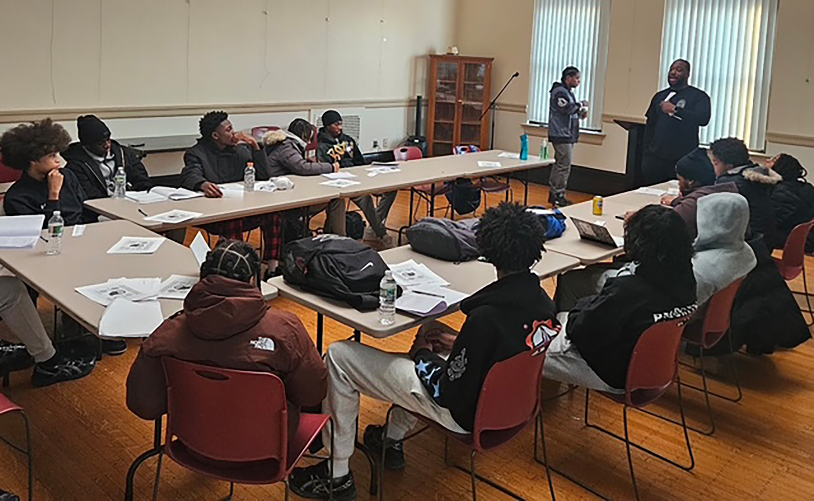
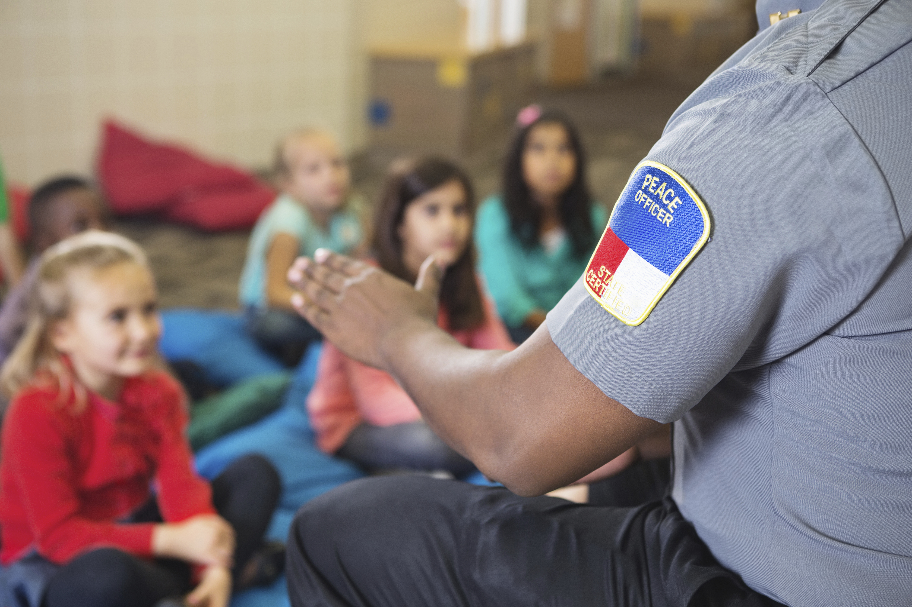
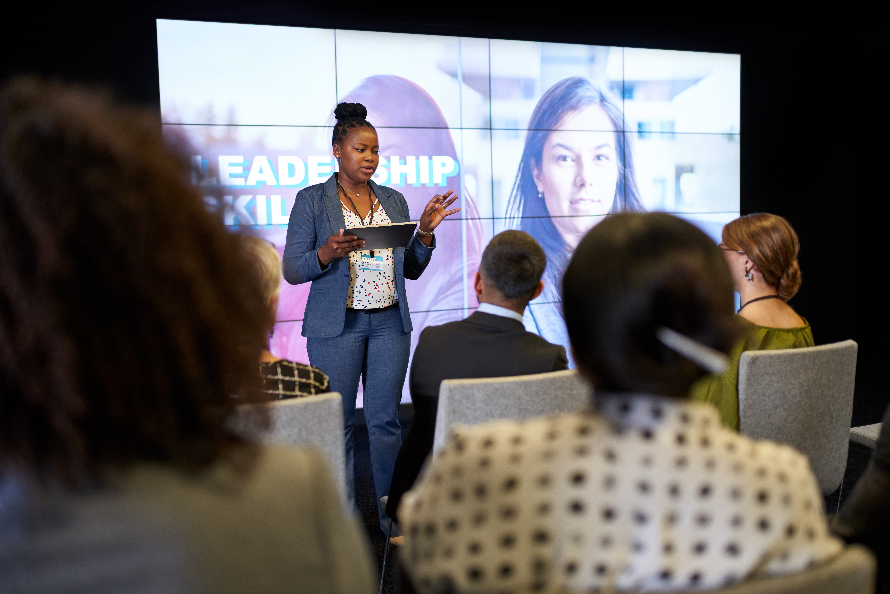

Real conversations.
Stronger connections.
Monthly gatherings for men to share life experiences, strengthen accountability, and build practical tools for personal and professional growth.
Explore men’s meetingsA PLACE TO GROW
Support for the person you are today.
Tools for the person you’re becoming.
Monthly gatherings for men to share life experiences, strengthen accountability, and build practical tools for personal and professional growth.
Explore men’s meetingsA supportive space for women to build confidence, navigate life transitions, and develop leadership through connection and shared experiences.
Explore women’s meetingsT.A.R.G.E.T.S. brings young men and women together for mentorship, life skills, and the encouragement to reach higher.
Discover T.A.R.G.E.T.S.
T.A.R.G.E.T.S. · BOYS & GIRLS
Tenacity Allows Reaching Goals Even Through Struggles.
Young men and women deserve guidance and a supportive place to learn. T.A.R.G.E.T.S. helps them set goals, build confidence, and handle setbacks through mentoring, honest conversations, and practical workshops.
FOR BOYS
Encouragement and practical guidance help young men make thoughtful choices and work toward their goals.
Explore the boys’ programFOR GIRLS
Supportive mentoring helps young women strengthen communication, build resilience, and develop their potential.
Explore the girls’ programT.A.R.G.E.T.S. IN DEPTH
Every young man & young woman deserves direction, support, and a safe space to grow. That’s why we created T.A.R.G.E.T.S., a mentorship program dedicated to empowering our youth with consistent guidance, real-life wisdom, and the tools they need to rise above the challenges of today’s world.
In a time where distractions are everywhere and positive guidance can be hard to find, T.A.R.G.E.T.S. stands as a steady foundation. Our mission is simple: help every young person discover who they are, what they can become, and how to aim for a life filled with purpose and possibility.
Group Discussions that spark honest conversations about choices, challenges, and character
One-on-One Mentoring for personalized guidance, accountability, and encouragement
Skill-Building Workshops that equip them with tools for success from communication and leadership to emotional intelligence and conflict resolution
We help our youth build confidence, resilience, and a success-driven mindset.
Young adults today face pressures previous generations never had to navigate: social media expectations, academic stress, peer influence, and a rapidly changing world. Without direction, it’s easy to feel lost.
Every session, we watch young men transform.
From uncertain to confident.
From discouraged to determined.
From just getting by to aiming higher.
They learn to communicate better, set goals, cope with setbacks, and build the emotional strength they need to thrive. Most importantly, they learn that they never have to walk their journey alone.
T.A.R.G.E.T.S. is committed to shaping the next generation of leaders, thinkers, and community builders. We believe in the potential within every young man & woman, and we’re here to help them unlock it.
If you know a young man or woman who could benefit from mentorship, or if you’d like to support our mission, we invite you to connect with us.
Together, let’s help them aim with intention… and hit every target life sets before them.



